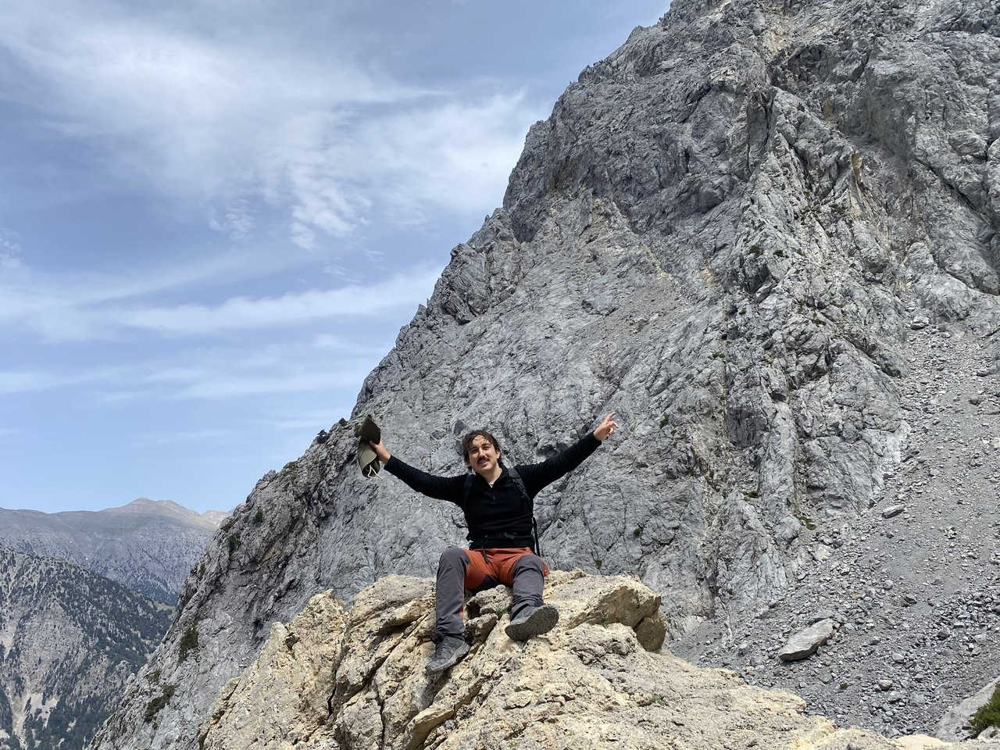

Plant evolution · University of Seville
Joan Cuscó
Borràs
I’m a PhD candidate studying how changes in ploidy shape the evolution of Narcissus sect. Bulbocodii.

Doctoral research
The evolution of
hoop-petticoat daffodils
My PhD focuses on Narcissus sect. Bulbocodii, a group of daffodils native to the western Mediterranean and commonly known as hoop-petticoat daffodils. I combine extensive fieldwork with flow cytometry, genomics and greenhouse experiments to study their diversification.
- Polyploidy and phylogeography
- Where do populations with different numbers of chromosome sets occur, and how are they related?
- Reproductive systems
- Does polyploidy promote self-fertilisation?
- Ecological niches
- Do populations of different ploidy levels occupy different environments?
Selected
publications
ORCID profile
About me
I’m based in the Department of Plant Biology and Ecology at the University of Seville, where I work with Marcial Escudero and Violeta Simón-Porcar.
I studied Environmental Biology at the Universitat Autònoma de Barcelona, spending a semester at the Universidad San Francisco de Quito during my degree. As part of my undergraduate studies, I also completed a traineeship with Daniel Gómez at the Jaca Herbarium (IPE–CSIC).
I completed a master’s in Biodiversity at the Universitat de Barcelona, specialising in Evolutionary Biology. My master’s thesis, supervised by Aaron Pérez-Haase, focused on the conservation genetics of Sphagnum fuscum, a glacial relict peat moss in the Pyrenees. As part of the degree, I also undertook an Erasmus+ traineeship with Dr. Vincent Merckx at Naturalis Biodiversity Center.
After finishing my master’s, I worked at the Centre de Documentació de Biodiversitat Vegetal (CEDOCBIV) before starting my PhD.
During my PhD, I completed a research stay with Dr. P.G. Meirmans at the Institute for Biodiversity and Ecosystem Dynamics at the University of Amsterdam. I have also collaborated with Dr. Sílvia Castro and Dr. Mariana Castro from the University of Coimbra.